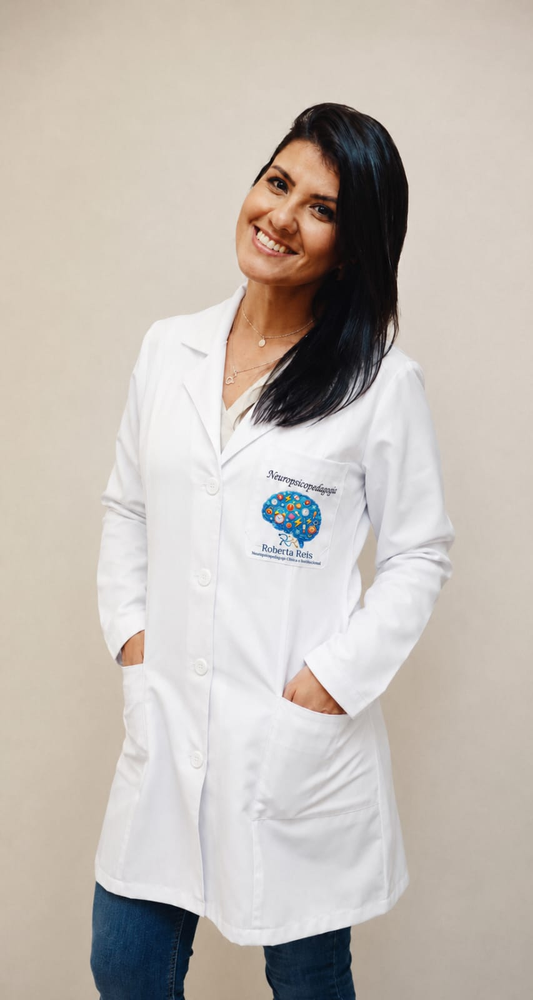
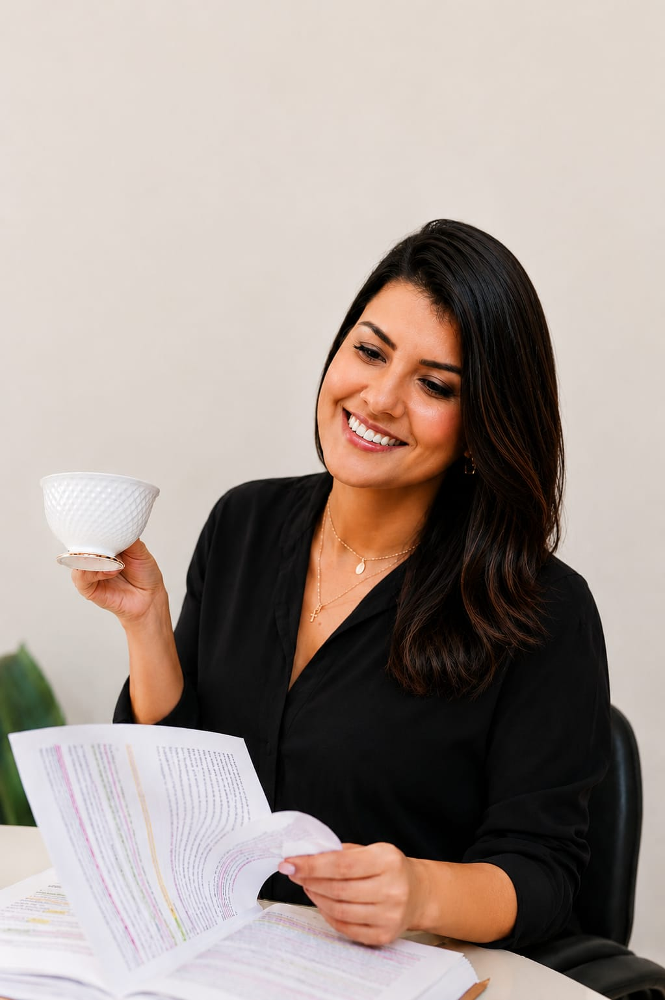

Avaliação e intervenção em dificuldades de aprendizagem, alfabetização e desenvolvimento cognitivo — com escuta, base científica e um olhar para o ser humano inteiro.

Sou Roberta Reis, neuropsicopedagoga e psicopedagoga em Juiz de Fora. Ajudo crianças, adolescentes e adultos a superarem barreiras na aprendizagem — entendendo como cada mente processa, memoriza, presta atenção e dá sentido ao mundo.
Investigação das funções cognitivas — atenção, memória, linguagem, funções executivas — para entender a raiz da dificuldade e traçar um plano.
Atendimento individualizado com base na consciência fonológica e no ritmo de cada um — o método do Intensivo da Alfabetização.
Orientação a escolas, professores e famílias para criar ambientes de aprendizagem que respeitam a neurodiversidade.

“Aprender deixa de ser um peso quando a criança descobre que é capaz.”
Depoimentos de mães e famílias acompanhadas — em suas próprias palavras.
Gostaria de agradecer de coração por todo o carinho, cuidado, dedicação e profissionalismo com que você acompanhou meu filho. Em cada atendimento foi possível perceber o quanto você exerce sua profissão com amor, respeito e sensibilidade. Tenho certeza de que esse trabalho fará diferença na vida dele e também na nossa família. 🙏💗
Super indico! Cheguei ao consultório totalmente perdida, sem saber o que estava acontecendo. Hoje minha filha melhorou muito no aprendizado e no comportamento — e eu não me acho mais uma péssima mãe. Você não é apenas uma profissional para nós, mas uma amiga que encontramos. Roberta Reis, eu indico! ❤️🙌
E aprende mesmo! Você mudou a vida escolar do meu filho todinha. No começo do ano você me disse que até junho ele já estaria lendo — chegou maio e ele já estava lendo. Profissional competente e amorosa. 😊
Excelente profissional — tem nos ajudado muito no crescimento educacional do nosso filho. ❤️🙌
Já conseguimos ver um progresso positivo. Muito obrigada pelo carinho e pela atenção de sempre. 🙏
Perfeição que fala! Excelente profissional. ❤️
Depoimentos reais compartilhados por famílias atendidas. Nomes de crianças preservados por privacidade.
Jogos que treinam atenção, memória, linguagem e matemática, por faixa etária. Para famílias treinarem em casa e para uso no consultório.
O primeiro passo é uma conversa. Agende uma avaliação e descubra como tornar o aprender mais leve.